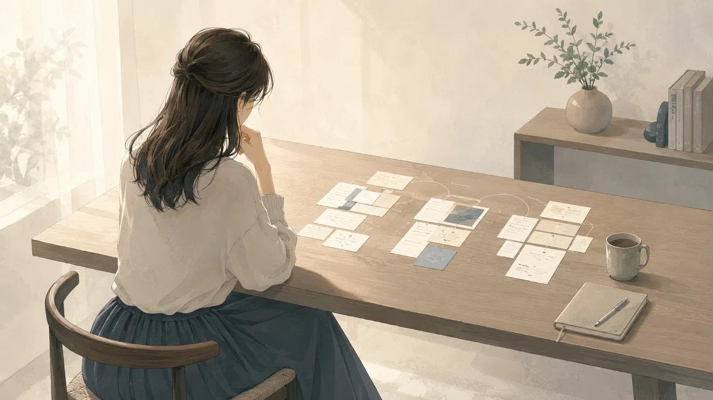
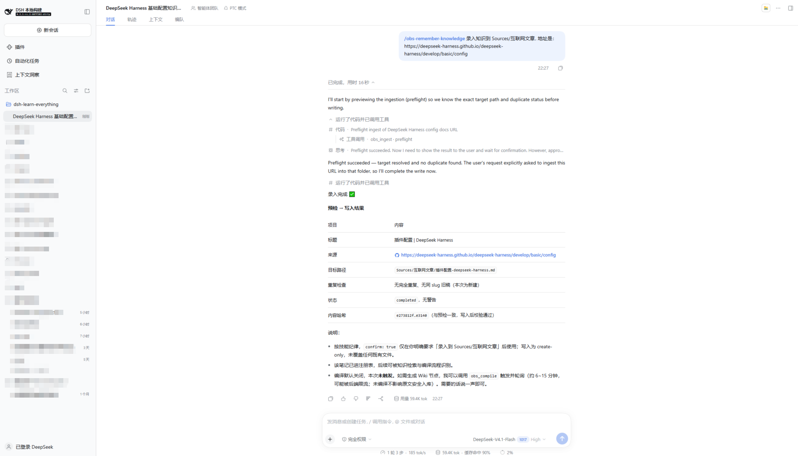
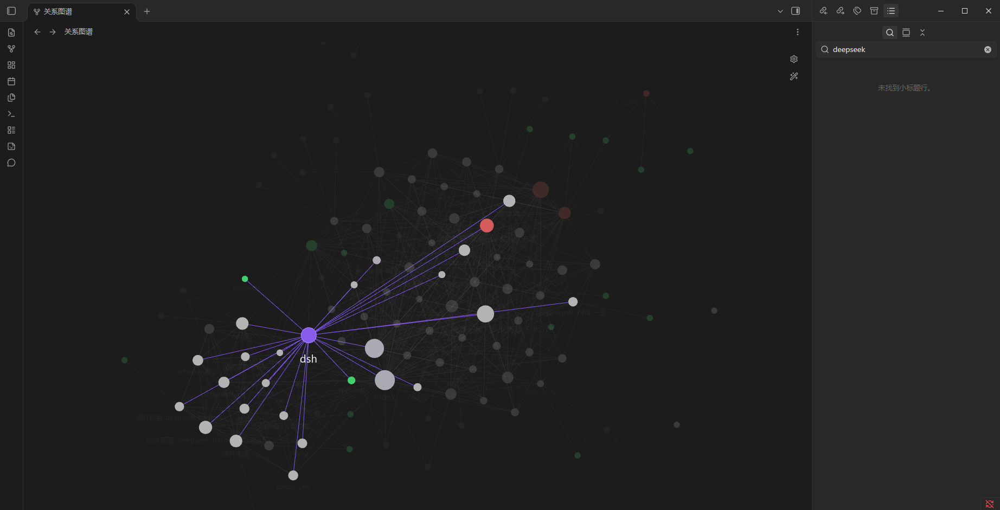
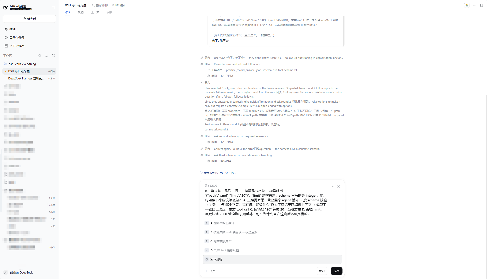
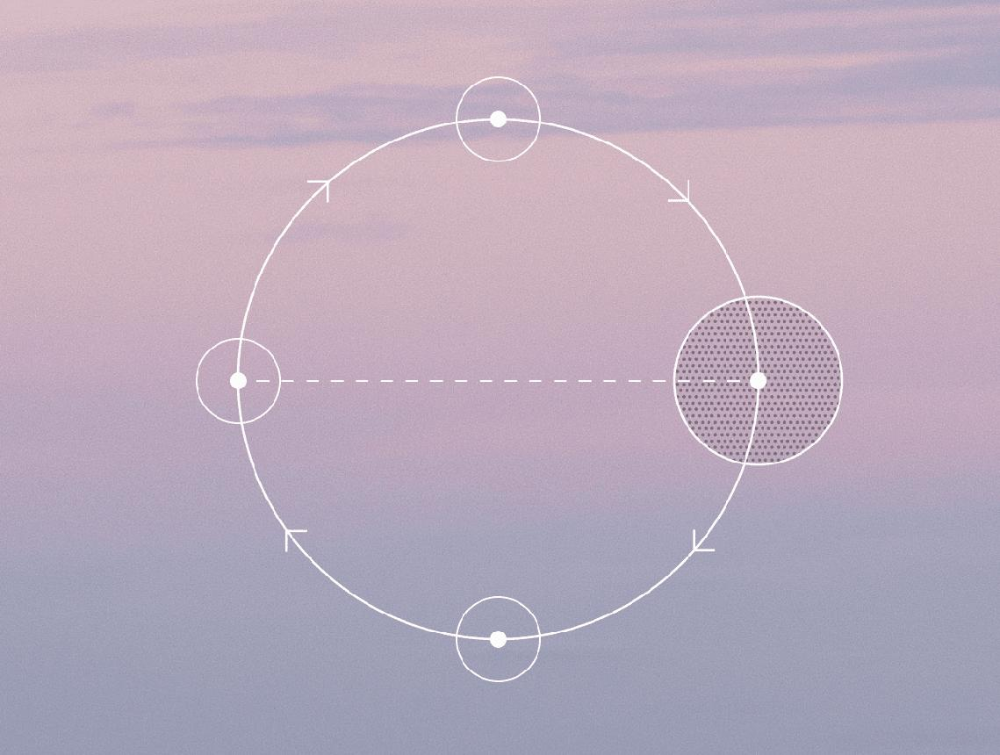
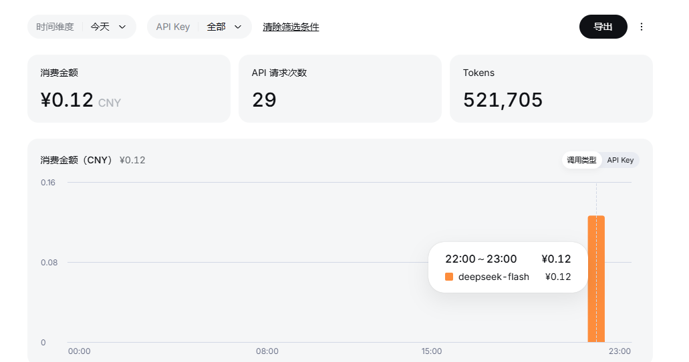

dsh-learn-everything 是一套运行在 DSH 里的个人知识学习插件：Obsidian 存原始知识，KarpathyWiki 编译成关联知识网，SQLite 追踪你的掌握度——把「知识管理」往前推一步，推向主动学习。
看到好文章，收藏！看到好教程，收藏！收藏的时候感觉自己又进步了——但过了几天，嗯？好像又忘了。问题可能不在于笔记整理得不够漂亮，而在于知识存下来之后：

AI 时代，你本身的视野和知识储备，才能带你走得更远。这个项目想做的，就是把「存下来」变成「学进去」。
所有操作都以 DSH 斜杠命令为唯一入口，右侧栏面板可视化知识图谱与学习状态。
把 URL 或本地资料丢进系统，它不会乱动你的库——自动查重、预检、两段确认，以 create-only 方式安全写入 Sources/，再由 KarpathyWiki 编译成 wiki/ 派生知识网。

不是每次遇到问题都去海量资料里重新翻一遍，而是从自己积累的知识里找到相关内容和依据，带上可信引用。

从 wiki 节点即时抽题、评估作答。如果你答「不会」，它不会直接给你答案，而是像严厉的老师一样逐步追问，直到你真的讲清楚——至少，不能总用「我好像懂了」骗自己。

练习结果、错题和复习安排连成一个环：每一次作答都会改变下一次练习出什么题。
正式知识资产只存这里，create-only 写入，frontmatter 原样保留。
LLM 把原文编译成概念/实体网络，可重建、可追溯，派生页不混入原始库。
新问题先在自己积累的知识里找证据和引用，而不是重新搜索互联网。
抽题、作答、评分、追问；SQLite 记录掌握度，复习排期反哺下一次选题。

系统严格区分正式知识、派生编译资产与过程性学习数据，坚持最小必要复杂度——确保知识库不被过程数据污染。
权威知识底座。Sources/ 存摄入原文（带 source_uri / content_hash 元数据），Inbox/ 归你自己。
派生编译层。wiki/concepts · entities · sources 由 LLM 自动构建，可整目录重建，不视为原始知识。
学习状态独立管理：题目、作答（只追加）、评分、掌握度、复习调度——绝不写入 Vault 笔记。
过程数据 · 不入库.env / .state/）均不入库。
得益于底层架构和极高的缓存命中率，一篇 URL 文章的摄入、编译加一次每日一练——这是真实 API 账单，不是估算。
3 个任务 · 29 次 API 请求 · 426,522 Tokens 合计，缓存命中 94–95%。

插件形态运行在 DSH（DeepSeek Harness）中，web 或源码方式启动均可。
Obsidian 打开正式 Vault，启用 obsidian-local-rest-api 与 karpathywiki 插件；Node.js ≥ 22.6。
dsh plugin --profile web add file:…/dsh-learn-everything-0.1.0.tgz，或源码符号链接开发部署。
DSH → 插件页填 apiKey / baseUrl / vaultName，保存前自动测试连接，错 key 不保存。
输入 /obs-remember-knowledge 摄入第一篇资料，次日 /obs-daily-practice 开始练习。
# 1) 摄入：预检查重 → 双确认 → create-only 写入 Sources/ → wiki 编译 /obs-remember-knowledge 录入知识到 Sources/互联网文章，地址是 https://… # 2) 检索：wiki 优先取证，答案带来源路径 /obs-knowledge-search 如何设计 tool 的 JSON Schema？ # 3) 练习：从知识网抽题，答错进入追问，结果写进复习排期 /obs-daily-practice 能来一个 dsh 相关的题目吗
你可以定制自己的知识仓库、复习节奏，甚至你喜欢的 AI 老师人格。它是一个真正属于个人开发者的开源项目。
Star、Issue、PR 都欢迎。